The phone app
The phone app (phone-app/, Expo / React Native, TypeScript strict) is the
remote control and the pocket brain: pairing, the three switches, every
toggle, message approval, and a phone-sized view of everything the Brain
knows. Five tabs — Brain, Now, Messages, Memories, Settings — plus Labs
screens reached from Settings (Rewind, Saga, Profile, Rehearsal, Confluence)
and a five-step onboarding.
Every screenshot in this chapter is the real app: the repository's code
exported to web (npx expo export --platform web) and captured headlessly at
phone size. Screens that need a paired Mac mini are shown in their honest
unpaired state — empty states are part of the design. The web export renders
the tab bar's default markers where native builds show icons; no tabBarIcon
is configured yet.
State: one store
src/state/useBrainStore.ts (Zustand) is the single source of truth:
connection state for the Mac mini (URL, token, relay URL) and glasses, the
three switches, and every toggle. A whitelisted snapshot persists to
AsyncStorage under the key dreamlayer.brain.v1 and rehydrates on launch.
Two derived reads keep the UI honest: brainKind() ("phone" until a Mac is
connected) and effectiveCloud() (always false while incognito).
Server calls go through brainFetch: try the LAN URL from pairing; on
failure, fall back to the relay URL if one was paired. Seam: the relay
itself — host any secure tunnel to the Brain and put its URL in the pairing
bundle; the client already prefers LAN and falls back. Setting the cloud or
incognito switch also syncs the Brain (POST /dreamlayer/config with
cloud_enabled / network_mode), so phone and panel never disagree.
Brain — the hub tab
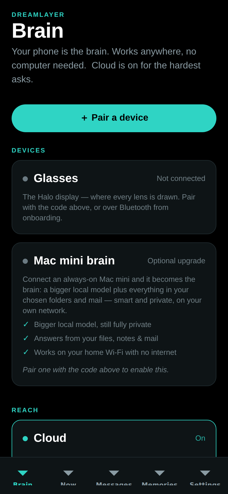
The default landing tab:
- Pair a device — scan the panel's QR (expo-camera, with a paste
fallback) or paste the
dreamlayer:code; one code wires Mac mini and glasses at once, with success haptics. - Devices — Glasses (status, forget) and Mac mini (status, its three benefit bullets, connect/disconnect — "Use phone as brain instead").
- Reach — the Cloud switch, disabled while incognito.
- Privacy — Incognito and Pause memory capture.
- Ask your brain — a query box straight to
POST /dreamlayer/brain/ask, rendering the answer with its tier. - Upcoming (when a Mac is connected) — agenda from the Brain, calendar sync button, quick add.
- Recent activity (when connected) — the first eight items of the unified feed.
- What your brain can do — the six-lens overview.
Now — the live mirror
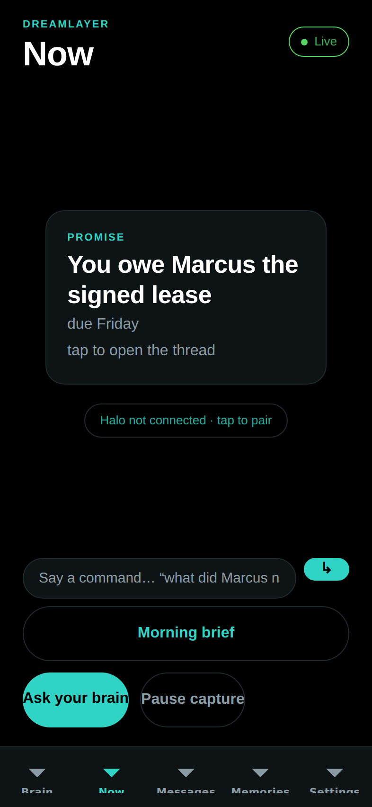
What the glasses are doing right now: a HaloMirror stage showing the last
card (or the paused state), a Live/Paused status pill, the latest morning
brief, a voice-command box that routes the same intents as the Oracle
(brief / answer / reply), and quick actions (brief, ask, pause/resume
capture). It polls GET /dreamlayer/brief/latest every 90 seconds and fires
a local notification when a genuinely new brief arrives.
Messages — hands-free relay
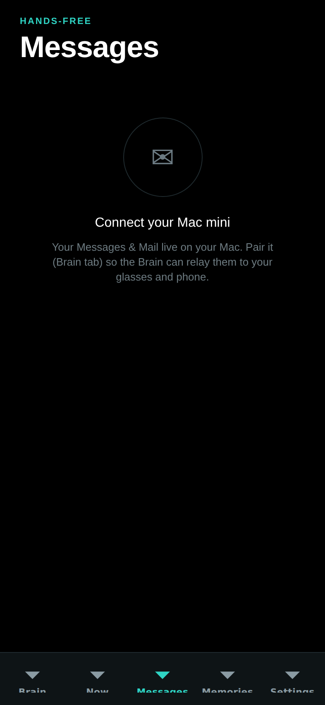
The Brain's Messages and Mail feed (12-second poll), with per-channel local
notifications. Tapping a message opens the reply pane: three AI-suggested
replies (POST /dreamlayer/replies) as tap-to-fill chips, then Approve and
send — which is the only send path, and it posts approved: true
explicitly. Gated empty states cover no-Mac, relay-off, and no-messages.
Memories — recall, grouped by day
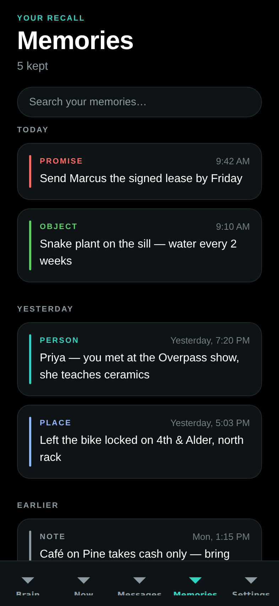
Today / Yesterday / Earlier groups, kind-colored (promise, person, object, place, note), with local search. With a Mac connected the search box gains a second stage: ask your files and mail, rendered as a "From your Brain" card with sources.
Settings — every toggle
| Privacy and relay | Oracle |
|---|---|
 |
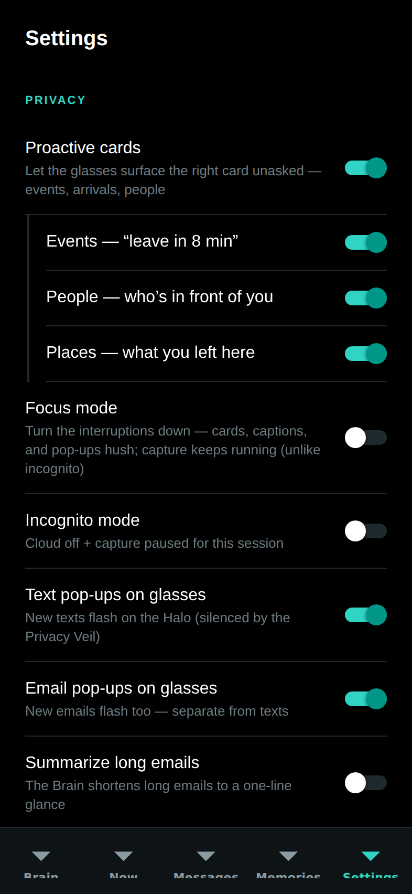 |
- Privacy: Proactive cards with nested Events / People / Places cues, Focus mode, Incognito, Text pop-ups, Email pop-ups, Summarize long emails, Pause memory capture.
- Oracle: the wake word (fixed "Hey Oracle" today), Proactive alerts, Live fact-checker (Veritas), Answer-ahead, wake sources (voice, tap, gaze, raise), and listening feedback (visual, audio, haptic).
- Devices and brain: glasses status and the link to the Brain tab.
- Labs: Saga, Profile, Rewind, Rehearsal, Confluence.
- Danger zone: Erase all memories (confirmed, clears the local memory store).
The full toggle-to-effect table, with defaults and the endpoints each drives, is in Settings and modes.
Labs screens
| Rewind | Saga | Profile |
|---|---|---|
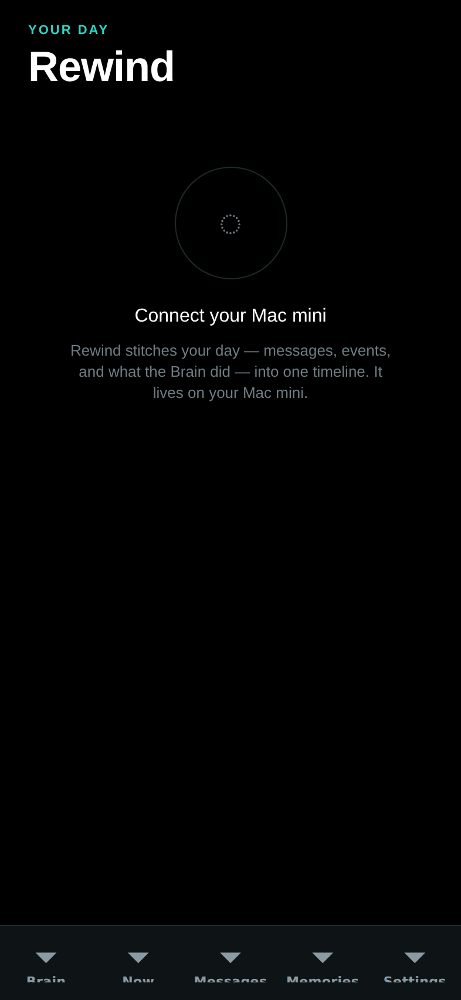 |
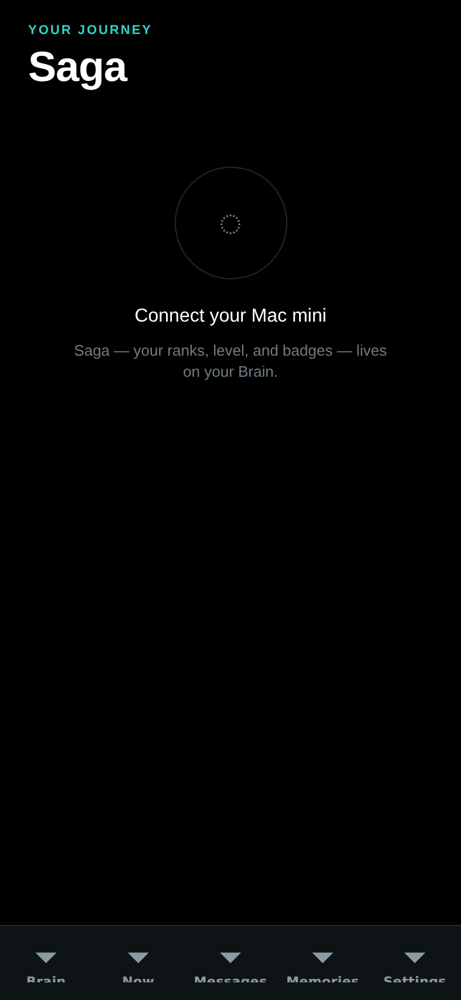 |
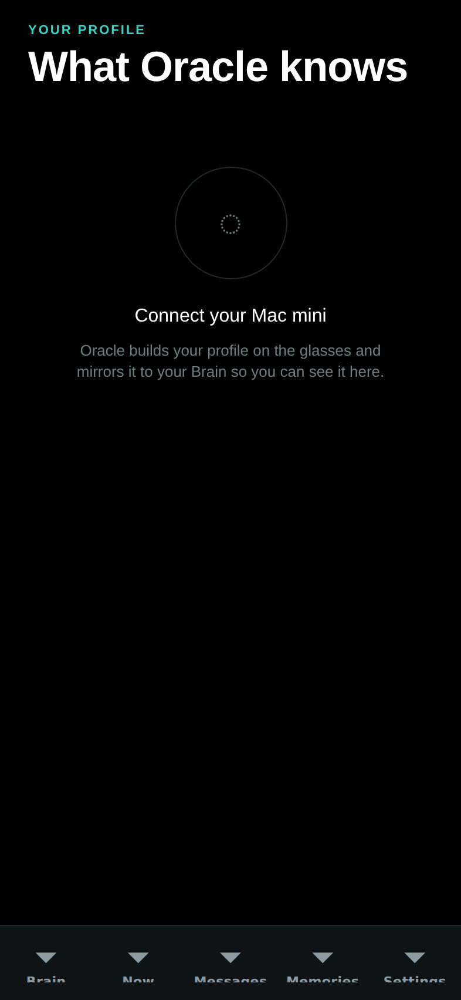 |
- Rewind — today's hour blocks from
GET /dreamlayer/rewind(the same day the glasses scrub), color-coded by kind. - Saga — rank, XP bar, and the achievement ledger; see Progression.
- Profile — "What Oracle knows about you": the mirrored user model.
| Rehearsal | Confluence |
|---|---|
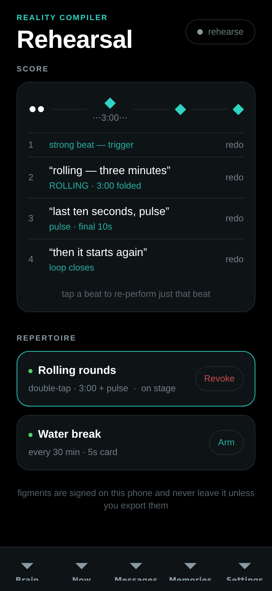 |
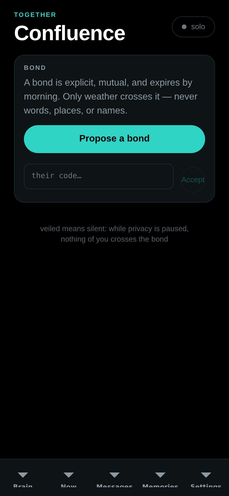 |
- Rehearsal — the Reality Compiler's score-and-repertoire view (beats on a timeline, figments to arm and revoke). Presentational today: it renders demo state and documents the interaction model until the phone bridge streams live figment state — a labeled seam, not a hidden one.
- Confluence — the bond lifecycle (propose, accept, live), togetherness, TinCan pings, weather gifts. Same status: presentational until live bond streaming lands.
Onboarding
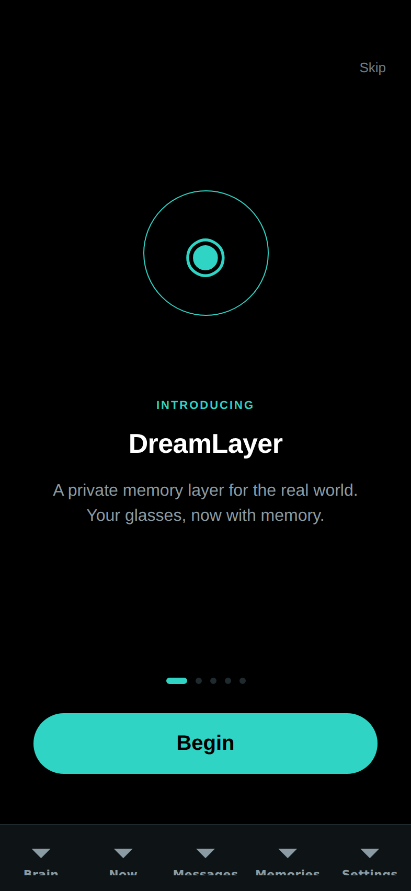
Five steps — welcome, how it works, recall, privacy, pair — with animated transitions, the pairing ring, and QR scan. Finishing (or skipping) lands on the Brain tab.
Services and design system
- Notifications (
src/services/notify.ts) — permission-memoized local pushes for new briefs and messages; silent no-op on web or without permission. Seam: on a real device,expo-notificationsneeds install permission granted. - Pairing codec (
src/services/pairing.ts) — thedreamlayer:code, byte-compatible with the Python implementation. - Earcons (
src/services/sound.ts) — the app ships the actual sound files (assets/sounds/: two "hey" wakes, two listens, two watch-outs, two looks, two chimes) with variant rotation that never repeats back-to-back. - Haptics (
src/services/haptics.ts) — light/medium/success/warn, safe everywhere.
Design system
src/ui/ implements the DESIGN.md doctrine: dark and luminous (background
black, surface #0E1416, memory teal #2FD4C4, attention coral, one accent
per surface), an 8 pt spacing grid, a five-level type scale with an eyebrow
style, and motion tokens (180/240/400 ms, one standard ease) with
useEntrance fade-and-rise and usePressScale spring on every touchable.
Primitives: Screen, ScreenHeader, Card, Section, Tappable,
EmptyState, StatusPill, PillButton, ConnectorCard with SwitchRow
and Bullet, QrScanner, PrimaryButton, plus the HUD-mirror components
(HaloMirror, CardPreview, DreamCanvas, HorizonPreview) that reuse the
glasses' exact palette as QA truth.
Running it
cd phone-app
npm install
npx expo start # scan the QR with Expo Go (iOS/Android)
npx tsc --noEmit # typecheck (strict)
There is no test suite in the phone package today; the pairing codec's
Python twin is covered by the host suite, and tsc --noEmit is the standing
check.